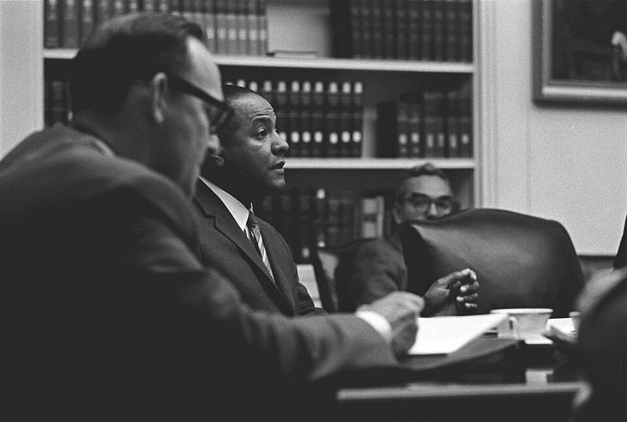
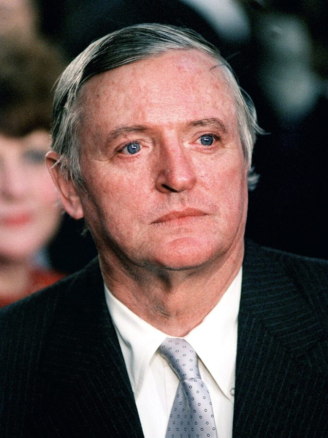
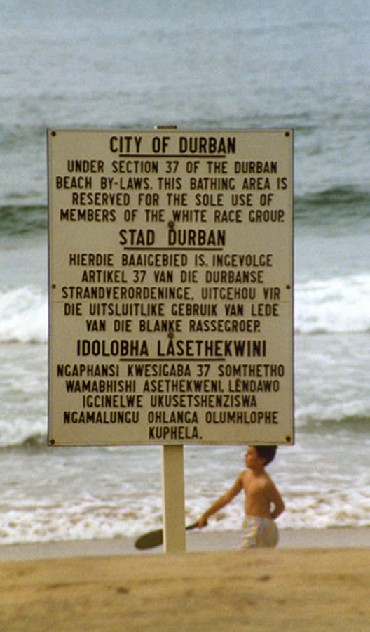

这一页在做什么
1980 年起他在 George Mason 教书，每周有两三晚住在华盛顿附近，写专栏支持里根的减税和放松管制。这一页讲三件事：Sowell 召集的 Fairmont 会议；八十年代初黑人保守派挨的骂，其中一篇骂他的文章是抄来的；他几次去南非讲学，全家在那里住过三个月。读的时候抓两条线：他怎么回应攻击（摆证据、提条件、挖苦）；他怎么用经济学解释种族隔离：为什么歧视要靠法律撑着。
乔治梅森大学在弗吉尼亚 Fairfax 的校园，摄于 2012 年。作者 1980 年来这里教书，第 1 段说没想到一待就是三十年。照片和书里的年代无关。Lucien Dalarun，CC BY-SA 3.0，维基共享资源
读之前：这一页在他一生的哪里
上一页停在 1980 年秋，他先以访问教授的身份去 George Mason，家还在宾州 Devon。这一页从 1980 年写到 1989 年，他四十四到五十三岁。1980 年里根当选，八十年代的华盛顿是减税、放松管制、改革福利的年代。同一个十年里，要求制裁南非种族隔离政权的运动越来越大，美国许多大学和教会在争论要不要撤资；1986 年国会推翻里根的否决，通过了对南非的制裁法。
读的时候带着这几个问题。不用先找答案，读完回来对照「检查一下理解」。
他说 George Mason 的同事把他当「经济学家」，而不是「黑人经济学家」。把这句话放到下一节那些攻击旁边读，是什么意思？§1
Jordan 那篇文章出了什么事？报社、《纽约时报》和作者各怎么讲，哪里不一样？§2
他说挡住南非黑人的是「社会主义」，不是资本主义。他怎么定义这两个词？换个定义，结论还成立吗？§3
教会卖股票那一段，他的反驳靠的是哪一步推理？这一步能推多远？§3
分节地图
这一页是原书第 6 章的前三节（章首没有小标题，本站记作 §1）。粗体是这一节的地标；斜体是英文这一节开头的几个词，在 Kindle 里搜它就能跳到那里，错字照电子书原样。读完打个勾。
通勤、室友 Rahn、Fairmont 会议约 800 词 WHEN I ACCEPTED MY PROFESSORSHIP … 第 5 段的减税和通胀是他的论断，没给来源；第 7 段起是那次会议。 Rowan 的专栏和一篇抄来的文章约 1900 词 It might be difficult nowadays to … 先是几段别人的骂语，第 15 段起是抄袭风波，第 34–48 段是 Buckley 的专栏。 南非：讲学、Roedean 女校、教会的股票约 2000 词 During the 198os, I sometimes lectured … 第 51–52 段是这一页讲得最完整的一段经济学推理，最后五段讲撤资。
出场的人
按出场顺序。书里的家人和普通人只写书里说的；公众人物写生卒年。
Richard Rahn 1942 年生，经济学家，公众人物 第 4 段：美国商会副会长兼首席经济学家。听说作者住廉价旅馆，请他住到自己家，两人同住六年多，直到 Rahn 娶了里根的首席撰稿人 Peggy Noonan。第 5 段：为减税法案游说。
Connie 作者的妻子，第 1 章出过场 第 4 段：和作者在 George Mason 旁买了联排房。§3 里三次随他去南非，在女儿的学校里结交了几位家长。
Thomas Sowell 1930 年生，经济学家，公众人物 第 7 段：召集 Black Alternatives 会议，请作者参加。§2 开头那些骂语多半冲着他。第 17 段的图注：1984 年来作者家做客，「最好的朋友」。
Thomas Atkins 1939–2008，民权律师，公众人物 第 11 段：时任 NAACP 首席法律顾问。听说里根考虑让 Sowell 当经济顾问委员会主席，拿奴隶制时代替主人说话的家奴来比他。
Carl Rowan 1925–2000，黑人专栏作家，公众人物 第 12–14 段：§2 开头骂 Sowell 的话多半出自他。1981 年 9 月在《华盛顿邮报》上的专栏，起因是 Sowell 在电视上谈最低工资。第 49 段：还说 Sowell 和作者是向里根政府讨赏的人。
George Jordan 克利夫兰 Plain Dealer 的记者 第 15 段：作者 1983 年 9 月在克利夫兰演讲后，他写文章骂作者，大段照抄 Rowan 骂 Sowell 的专栏。报社最后给了他训诫加停职三天（第 27 段）。
Joseph Schwartz Ashland College 校长 第 29 段：《纽约时报》说是他向报社指出抄袭的；作者说是自己由他陪同去说的（第 31 段）。
William F. Buckley Jr. 1925–2008，保守派专栏作家，公众人物 National Review 杂志的创办人。第 34–48 段：在 Plain Dealer 上写专栏，把 Jordan 和 Rowan 的两段话并排摆出来挖苦。
Benjamin Hooks 1925–2010，民权领袖，公众人物 1977–1993 年任 NAACP 执行主任。第 49 段：骂黑人保守派是新一代的 Uncle Tom。
Leon Louw 1948 年生，南非自由市场派，公众人物 第 58、62 段：说作者一家办了手续成了「名誉白人」，常拿这事开玩笑。第 65 段：安排他在南非各地巡回演讲。
Devyn 作者的女儿 第 61–62 段：1980 年在南非时五岁，进了 Johannesburg 的 Roedean 女校，是全校唯一的黑人女孩，一周多后从学前班升到一年级。
背景：作者默认你知道的事
按在书里出现的顺序排，标题前是节号。这里只讲事情本身，作者怎么看放在后面几节。
§1 Kemp-Roth：里根的减税法1981 年 8 月 13 日，里根在加州的 Rancho del Cielo 牧场签署《经济复苏税法》和同时通过的预算法案。Karl Schumacher（白宫摄影师），公有领域，维基共享资源 Kemp-Roth 是众议员 Jack Kemp 和参议员 William Roth 提的减税案，最后成了 1981 年的《经济复苏税法》（Economic Recovery Tax Act）。它把个人所得税率分三年下调约 23%，最高一档从 70% 降到 50%，税级还开始随通胀调整。背后的想法叫「供给学派」：Art Laffer、Paul Craig Roberts 等人主张降低边际税率来刺激工作和投资。第 5 段的 Rahn 就在美国商会替这个方案游说。
§1 Fairmont 会议和与会的人里根当选后，1980 年 12 月在旧金山 Fairmont 酒店开了一次会，正式名字是 Black Alternatives Conference。书里第 8 段说，目的是让不同种族、不同观点的人一起讨论黑人面对的问题和对策；Sowell 在自己的书里说，办会是不想让公众以为民权组织的领袖代表全体黑人。第 7 段点名的人：Milton Friedman（弗里德曼，诺贝尔奖得主）；斯坦福经济学家 Michael Boskin；电视节目主持人 Tony Brown；当时给参议员 Danforth 当助手的 Clarence Thomas，1991 年起任最高法院大法官；后来任司法部长的 Ed Meese。Percy Sutton 和 Charles V. Hamilton，书里说是民主党的官员，后者和 Stokely Carmichael 合写了 1967 年的《黑人权力》（Black Power）。
§2 NAACP 和经济顾问委员会NAACP（全国有色人种协进会）1909 年成立，是美国最老的民权组织，靠诉讼推翻了学校的种族隔离。八十年代它和多数民权组织一样，反对里根政府的不少政策；黑人选民绝大多数投民主党。第 11 段的 Council of Economic Advisers（经济顾问委员会）是 1946 年设立的白宫机构，三位经济学家给总统出经济政策的主意，主席是很显眼的职位。传说里根要让一位黑人保守派经济学家当主席，所以 Atkins 才那样说。
§2 骂人话里的几个名字
1965 年 7 月，Carl Rowan（居中说话的那位）在白宫内阁会议室参加一次讨论越南的国家安全会议。Yoichi Okamoto，公有领域，维基共享资源 第 13 段 Rowan 一口气用了几个形象。Uncle Tom 出自 1852 年的小说《汤姆叔叔的小屋》，后来被舞台剧演成对白人唯唯诺诺的黑人，成了骂黑人「向白人献媚、出卖同胞」的重话。Stepin Fetchit 是好莱坞黑人演员 Lincoln Perry 的艺名，二三十年代走红，专演懒散迟钝的角色；Aunt Jemima 是煎饼粉商标上的黑人保姆，2021 年这个品牌改了名。Quisling 是二战时投靠纳粹的挪威人，他的姓成了「卖国贼」的代称。David Duke 当过三 K 党的头目。书里还引了两个侮辱黑人的字眼，本站不重复。
§2 Plain Dealer、Ashbrook 中心和一桩抄袭
William F. Buckley Jr.，1985 年 1 月出席里根第二次就职典礼时。SPC 5 Bert Goulait（美军），公有领域，维基共享资源 The Plain Dealer 是俄亥俄州克利夫兰的主要日报。作者演讲的主办方 Ashbrook 中心 1983 年在 Ashland 设立，以一位保守派国会议员命名，里根亲自去揭的幕。书里写 Ashland University，那所学校 1989 年才从 Ashland College 改名，《纽约时报》那篇报道（第 29 段）用的就是旧名。
§3 种族隔离和「工作保留」
1989 年德班海滩上的告示：按市海滩条例第 37 条，这片浴场「只供白人种族群体使用」，用英语、阿非利卡语和祖鲁语写了三遍。Guinnog，CC BY-SA 3.0，维基共享资源 apartheid 是南非 1948 年起推行的种族隔离制度：按白人、黑人、有色人（Colored，指混血族群，和美国的 colored 不是一个意思）、印度人分类，规定谁住哪里、上什么学校、能干什么活。job reservation（工作保留）是其中一项：1956 年的劳资调解法第 77 条授权政府把某些职业留给白人；矿业里的「肤色壁垒」更早，从 1911 年的法规起就有。白人工人和他们的工会是它的主要维护者。1979 年的改革废止了大部分法定的工作保留，矿业那一块拖到 1987 年。
§3 黑人家园和 Transkei 大学homelands（黑人家园，也叫 bantustans）是种族隔离政府按族群划给黑人的「自治区」，目的之一是让黑人成为这些地方的「公民」，从而失去南非的公民权。Transkei 是科萨人（Xhosa）的家园，1976 年 10 月 26 日被宣布「独立」，当天联合国大会就宣布不予承认。第 53 段的 Transkei 大学 1976 年设在首府 Umtata，2005 年并入今天的 Walter Sisulu 大学。1994 年南非举行不分种族的大选以后，各个家园都并回了南非。
§3 名誉白人、制裁和撤资种族隔离法律让黑人不能和白人同住一个饭店、上同一所学校。对一些非白人的外国访客（运动员、作家、外交往来的人），政府按个案给予白人的待遇，这叫「名誉白人」（honorary white）。八十年代国际上要求制裁南非：1985 年外国银行拒绝给南非续贷，南非被迫冻结部分外债；1986 年美国国会推翻里根的否决，通过《全面反种族隔离法》，禁止对南非的新投资和一部分进口。民间的撤资运动是让大学、教会这类机构卖掉在南非有业务的公司的股票。第 74 段那个教会的争论就是这个。
先用中文过一遍：这一页的经济学
作者讲到经济学的地方，这里先从书外把道理讲一遍：它是什么、经济学一般怎么分析。它在这一页起什么作用，看每块最后一句。讲过的概念都汇总在经济学概念 。
§1 边际税率和供给学派 marginal tax rate / supply-side economics 边际税率是「多挣的下一块钱要交多少税」，和平均税率不同。累进税制下收入越高，边际税率越高：1981 年以前美国最高一档是 70%，这档的人多挣 100 美元只留下 30。就像加班费被扣走的比例越高，越不想加班。供给学派认为，降低边际税率能让人多工作、多投资，增长会补回一部分甚至全部减少的税收（Laffer 曲线）。主流经济学家同意税率会影响激励，争的是影响多大；多数人认为美国八十年代的减税没有靠增长把税收全补回来。
在这一页： §1 第 5 段：作者说 Kemp-Roth 大幅降低边际税率，带来经济转机，还把通胀从 13% 降到 4%。
1981.7–1982.11 衰退
1979.10 联储收紧
13.5%
1981.8 减税法签字
3.2%
4.1%
1979
1980
1981
1982
1983
1984
1985
1986
1987
1988
1989
消费者物价年涨幅（年平均）
本站示意图：美国消费者物价指数的年涨幅，数字取自明尼阿波利斯联储整理的劳工统计局数据。作者说的「13% 到 4%」对得上；通胀降得最快的是 1981–83 年，正是联储紧缩、经济衰退的那几年。
§3 市场让歧视有代价 the cost of discrimination 经济学家 Gary Becker 1957 年的《歧视经济学》把歧视当成一种要花钱的「嗜好」：雇主不肯雇某一族群，就只能在更少的人里挑，往往要付更高的工资或用不那么合适的人；不歧视的竞争对手成本更低，可以用更低的价格抢生意。竞争越激烈，这种嗜好越贵。像一家只招某所名校毕业生的公司，招人更难也更贵。所以歧视最牢固的地方，往往是竞争被挡住的地方。争议在于：偏见来自顾客或同事时，迎合它的雇主未必吃亏，歧视可以长期存在。
在这一页： §3 第 51–52 段：作者用它解释南非为什么要用法律规定哪些活不许黑人干。
没有种族法律
有工作保留法
雇主 A：只雇白人
人选少，工钱高
雇主 B：谁便宜能干就雇谁
也雇黑人
B 成本低，抢走 A 的生意
歧视要掏钱，会变少
法律：这些活不许黑人干
白人工会维护的
所有雇主一样不许雇黑人
谁也不吃亏，没人来抢生意
代价落在黑人工人身上
作者的推论：法律存在本身，说明没有它雇主会雇黑人（第 51 段）
本站示意图：左边是书外的一般分析，右边是作者讲的南非。「白人工会维护的」是本站补的史实，书里没写。
§3 社会主义和资本主义怎么定义 socialism / capitalism 教科书常看两件事来分：生产资料（工厂、土地、矿山）归谁，资源靠什么来分配。资本主义：生产资料主要私有，生产什么、卖给谁由价格和市场决定。社会主义：生产资料公有或由政府控制，靠计划或政府决定来分配。现实里各国都是混合经济，差别在程度。所以定义的松紧很要紧：只算「公有」，严格意义上的社会主义国家没几个；把「政府控制」也算进去，管制多的国家都可以叫社会主义。关于南非的争论，很大一部分争的就是这个。
在这一页： §3 第 53–56 段：作者用「政府拥有和/或控制生产资料」这个定义，说种族隔离下的南非是社会主义，不是资本主义。
§3 撤资和制裁 divestment / sanctions 制裁是政府出手：禁止贸易、投资、贷款、航班，让对方的经济付出代价，逼它改政策。撤资（divestment）是投资者自己卖掉在那个国家有业务的公司的股票，或者要求公司撤出。经济学先问：代价落在谁身上？股票卖出去总有人买，公司照常经营，单纯的撤资多半只是换了股东；贸易和金融封锁才会让对方经济吃紧，但也可能落到那个国家的穷人头上。支持者看重的常常是政治信号和道义表态，不只是经济上的损失。
在这一页： §3 第 73–77 段：作者对一个教会说，卖掉股票只是换了股东，对南非黑人毫无帮助。
作者的论证，一步一步
一条种族法律写进法典，最明显的原因是：没有它，就不是人人都会照它做。§3 第 51 段
南非有许多歧视性法律，比如「工作保留」：不许黑人当火车司机、电梯工。§3 第 51 段
这些法律的存在说明（他用的词是 suggested）：没有它们，黑人就会被雇来干这些活。§3 第 51 段
自由市场让歧视付出代价，因此可以预期歧视会更少。§3 第 52 段
要达到南非那种程度的种族歧视，就得用法律和政治手段压住市场的力量。§3 第 52 段
八十年代的减税是不是压下通胀、救了经济
主流看法： 多数经济学家把八十年代初通胀的回落主要归功于联储主席 Volcker 1979 年起的紧缩：高利率，代价是 1981–82 年的严重衰退。减税对后来复苏的作用有争论：供给学派认为降税率改善了工作和投资的激励；批评者指出减税没有靠增长补回税收，联邦赤字随之扩大。
作者的看法： 不顾许多政治家和经济学家的悲观预言，Kemp-Roth 带来了经济的大转机，并把通胀从八十年代初的 13% 降到里根离任时的 4%（§1 第 5 段）。书里没有给来源。
本站的评论： 数字对得上，因果写过头了。通胀降得最快是在 1981–83 年，和联储紧缩、经济衰退的时间对得上；减税会刺激需求，按一般的分析不会压低物价。把复苏部分算在减税头上，有经济学家支持，也有人反对；把通胀下降也算进去，主流里很少有人这样看。这一句当作他的政治立场来读，比当作经济史的结论来读更合适。
经济学家是不是普遍认为最低工资伤害低技能工人
主流看法： 七十年代的教科书和多数经济学家认为，最低工资高于市场工资时会减少低技能工人的就业。1994 年 Card 和 Krueger 对新泽西快餐店的研究没有发现就业减少，此后学界争的是效应有多大、在什么条件下出现（见最低工资 ）。
作者的看法： Rowan 骂 Sowell 时，显然不知道学院经济学家普遍认为最低工资不利于低技能工人的就业，而低技能工人里黑人青少年占的比例偏高；他引了 1976 年 90%、1990 年 80% 的两次调查（§2 第 14 段）。
本站的评论： 拿调查说明「当时有共识」是有力的，两个数也基本对得上。但有两处要打折：「同意」里含「有保留地同意」；调查是几位学者向学会会员抽样，不是学会自己做的。他从「多数同意」直接推到对方「无知」，跳了一步：多数人同意不等于问题有了定论。后来共识也确实松动了，见「对照今天」。
没有法律撑着，市场会不会自己把歧视磨掉
主流看法： 竞争会提高歧视的代价，这是 Becker 以来经济学里的老命题，争的是能磨掉多少。他的模型也说明：偏见来自顾客或同事时，歧视可以在市场里长期存在；主张立法的人据此说不能只靠市场。
作者的看法： 种族法律的存在本身说明，没有它雇主会雇黑人；市场让歧视付出代价，所以要达到南非那种程度的歧视，必须靠法律和政治手段压住市场（§3 第 51–52 段）。
本站的评论： 这是这一页推理最完整的一段，前半有史实支撑：1922 年矿主要裁掉一批白人工人、换用工钱低的黑人，白人矿工罢工直至武装暴动，此后政府才把矿业的肤色壁垒写得更死。被法律挡住的，正是想雇黑人的雇主。弱处在于从「会更少」很容易滑到「会消失」。他自己的措辞是 one would expect less of it，没说没有。美国北方没有种族隔离的法律，私人房东和雇主拒绝黑人也很常见，说明市场的力量有限。
种族隔离下的南非算不算「社会主义」
主流看法： 通常把种族隔离看作一种种族统治制度：它大量动用国家权力（限定居住区、工作保留、国营企业），但私有产权和市场照样存在，一般不叫它社会主义。书里也写了，ANC 和一些想帮黑人的白人自由派，当时在呼吁社会主义。
作者的看法： 社会主义是政府拥有和/或控制生产资料；南非的社会主义，而不是资本主义，是黑人最大的社会经济障碍。黑人需要自由市场：为谁工作、跟谁买卖都由自己决定（§3 第 55 段）。
本站的评论： 定义里的「和/或控制」很宽，几乎任何管得多的政府都能算进去，这样一来结论很容易成立，也就说服不了不接受这个定义的人。有力的地方是他指出了具体机制：法律规定谁能干什么活、住在哪里。这一页里摆出的证据只有一场问答，学生想要的那些自由，也可以说是平等的公民权利。不如把问题换成：哪几条具体的法规挡了黑人的路。
撤资能不能帮到南非黑人
主流看法： 经济学家多半怀疑单纯撤资的经济效果：卖出的股票总有人买。主张制裁的人，如南非的图图（Desmond Tutu），看重的是政治压力和道义表态；也有人认为真正让南非政府吃紧的是 1985 年起的银行断贷和政府制裁。
作者的看法： 教会卖掉股票，只是让别人买去「犯同样的罪」；撤资一点也帮不了南非黑人，只会让一些教友心里好过（§3 第 75–77 段）。
本站的评论： 在「股票换手不改变公司经营」这一点上，他的推理站得住，后来的研究也发现撤资对相关公司的股价几乎没有影响。但他只把撤资当成一笔交易，没有讨论它作为政治信号的作用；大批机构一起表态、银行断贷、政府立法，和一个教会卖股票不是一回事。他回答「这个教会该不该卖」很有力；书里这句话说的是教会的股票，可第 74 段把整场争论都叫作 moral posturing，如果由此推到「整个撤资运动毫无用处」，就超出了这段推理能证明的范围。
书里的剪报和文件
剪报在你的 Kindle 上是图片，字小，搜不到。这里给大意，难词收在后面。
§2 第 19 段 · 1983 年 10 月 12 日 The Plain Dealer 上 George E. Jordan 骂作者的文章在第 18 段（…complain about Jordan's attack article.）之后，一整版剪报。
大意： Jordan 说，9 月 27 日作者来克利夫兰兜售自由企业、让联邦政府少管事那一套，令他厌恶；说他是新压迫者的辩护士、里根政府早期的顾问，不肯承认受惠于民权运动。开头和结尾几段抄自 Rowan。「顾问」是 Jordan 的说法：第 49 段作者说自己没为里根政府工作；这一章后面写到他 1980 年在劳工部交接组当过不到一天的无薪成员（下一页）。第 15 段正文引的和剪报有几个字不同。
bill of goods
第 5 行
（骗人的）一堆货
sell someone a bill of goods 是口语「骗人上当」。Jordan 说作者在兜售一套靠不住的东西。
get the federal government off the backs of people
第 5 行
让联邦政府别再压在人们身上
off someone's back 是「别再烦某人、别管」。这是里根一派的口号式说法，Jordan 拿来讽刺。
butter-tongued apologist
第 7 行
油嘴滑舌的辩护士
apologist 不是「道歉的人」，是替某种立场辩护的人。这个说法也抄自 Rowan。
do-gooders
第 8 行
好心办坏事的人，爱管闲事的慈善家
带贬义。Jordan 在转述作者的看法：自由企业被一心搞再分配的好心人破坏了。
shape his lips to say
第 12 行
（就是）张不开嘴说
字面「把嘴唇做成说某话的形状」，指死也不肯说出口。
词与短语
你用 Kindle，单个生词长按就能查，这里只收词典帮不上的：每个词都认识、合起来不懂的说法，口语和俚语，那个年代的说法，反话。斜体小字是原句里连续的几个词，错字照电子书原样，搜它就能跳到那里。点「记下」收进词本。
§1 通勤、室友 Rahn、Fairmont 会议
not as a black economist
… an economist, not as a black economist …
而不是当作「黑人经济学家」
他在意的是别人先看他的专业，不先看肤色。下一节的攻击正好反过来，全冲着他的肤色和立场。
left alone
… given teaching assignments and otherwise left alone …
（除了排课）不来打扰我
不是「被冷落」。他说这一条非常要紧：没人管他在外面干什么。
heady times
… were heady times in the nation's …
让人兴奋得有点飘的年代
heady 原指酒劲上头。紧跟的 nation's capitol 应是 capital（首都），capitol 是国会大厦，多半是 capital 的误拼。
make the case for
… in making the case for the tax cuts …
为……摆理由、游说
case 是「论据、理由」，不是「案子」。
marginal tax rates
… drastically slashed marginal tax rates …
边际税率
多挣的下一块钱要交的税率。见「经济学」一节。
way out of step with
… position was way out of step with …
和……差得很远，格格不入
out of step 原是行进时步子没踩齐；way 在口语里是「远远地」。
dubbed
… was later dubbed by the media …
被称为，被起了个名字
dub 在这里不是「配音」，是「给……起绰号」。
Black Power
… who co-authored Black Power with Stokely …
（书名）《黑人权力》
1967 年出版，「黑人权力」运动的代表作。屏幕上没有斜体，容易当成普通词组。
present papers
… opinions to present papers and to …
（在会上）宣读论文
present 是「宣读、报告」，papers 是「论文」，不是「出示文件」。
Uncle Tomism
… without charges of Uncle Tomism and …
「汤姆叔叔」作风：讨好白人、出卖同胞
对黑人很重的指控，来历见「背景」。这一页里这个词出现了好几次，§2 的攻击用的就是它。
selling out
… of Uncle Tomism and selling out …
出卖（自己人、原则）
sell out 在这里不是「卖光」。
love fest
… gathering proved so harmonious that some …
一团和气的聚会
原文 love fest 在引号里，搜这几个词。媒体的说法，略带讽刺：大家只说好话。
§2 Rowan 的专栏和一篇抄来的文章
give readers the flavor
… To give readers the flavor, I'll …
让读者体会一下那种味道
flavor 在这里是「（某种气氛的）样子」。
Council of Economic Advisors
… head of the Council of Economic Advisors …
（白宫）经济顾问委员会
正式拼法是 Advisers。见「背景」。
syndicated columnist
… Syndicated columnist Carl Rowan said …
（专栏同时卖给多家报纸的）全国性专栏作家
syndicate 是专门把专栏批发给各地报纸的代理公司。作者自己也是。
If that weren't enough
… If that weren't enough, Rowan added …
这还不够似的，更有甚者
Vidkun Quisling
… If that weren't enough, Rowan added …
吉斯林（卖国贼的代称）
原文在引号里，紧跟这几个词后面。二战时投靠纳粹的挪威人，见「背景」。
dishing out bull
… In the columnist's eyes, the …
满嘴胡扯
原文在引号里，就在这几个词前一句。dish out 是「一勺勺地端出来」，bull 是 bullshit 的委婉说法。
obviously oblivious to
… Rowan was obviously oblivious to the broad …
显然完全不知道
oblivious 是「浑然不觉」。两个词头韵相押，是作者的挖苦。
an interesting twist
… There's an interesting twist to Carl …
一个有意思的转折
twist 是故事里出人意料的一拐。
luncheon address
… I delivered a luncheon address to …
午餐会上的演讲
address 作名词是「正式的演讲」。
The Plain Dealer
… Plain Dealer's George Jordan wrote a …
（报纸）克利夫兰《老实人报》
plain dealer 原意是「说话直、做事公道的人」。
the plot thickens
… But the plot thickens. Some several …
事情越来越有意思了
原是侦探小说里的套话：情节变复杂了。作者半开玩笑地用。
virtually word for word
… plagiarized, virtually word for word, parts …
几乎一字不差
virtually 是「几乎」，不是「虚拟地」。
well within his rights
… he was well within his rights …
完全是他的权利
well 加强语气：远没有越界。
call matters as he saw them
… to call matters as he saw …
怎么看就怎么说
call 原是裁判判球。编辑在替 Jordan 说话。
thank me for bringing the matter to their attention
… began to thank me for bringing the …
谢谢我把这事告诉他们
客套话，意思是「会到此为止」，作者下一句就点破了。
suburban reporter
… George Jordan, a suburban reporter, had …
跑郊区新闻的记者
《纽约时报》对他的介绍：报社里负责郊区新闻的记者。
owning up to
… Plain Dealer's owning up to the plagiarism …
承认（错误）
own up to 是口语的「认错」，不是「拥有」。
only when whites did the plagiarizing
… but only when whites did the plagiarizing …
只有白人抄袭时才当真
反话。他认为处罚太轻，挖苦报社对黑人记者从轻发落。
victimology
… you are interested in victimology and …
「受害者学」
Buckley 的挖苦：把什么都讲成谁害了谁的那一套论调。同一句里 how President Reagan has victimized… 就是在讽刺这种论调。
peddled by ideological orthodoxy
… different from those peddled by ideological orthodoxy …
正统意识形态兜售的（结论）
peddle 是沿街叫卖，带贬义。
led quietly away to rest homes
… are led quietly away to resthomes …
被悄悄带去疗养院
反话：在自由派教师里公开支持里根的人，被当成神志不清的人处理。屏幕上 resthomes 粘成一个词。
assembly-line techniques
… that assembly-line techniques are being invented …
流水线作业
挖苦：骂黑人保守派的文章都能流水线生产了，暗指抄袭。
supply-side denunciation
… Call this, if you like, supplyside denunciation …
「供给学派式的声讨」
双关：借里根的供给学派经济学开玩笑，说供应声讨文章的一方产量大增。
as Joe McCarthy used to say
… my hands, as Joe McCarthy used …
就像麦卡锡常说的
五十年代反共的参议员麦卡锡常挥着纸说「我手里有一份名单」。Buckley 拿这个姿势开玩笑。
his brother
… but his brother, the distinguished black …
他的黑人兄弟（同胞）
不是亲兄弟。Buckley 用 brother 指同是黑人、观点相近的 Sowell，最容易读错的一处。
perhaps because they are better educated
… perhaps because they are better educated …
也许因为他们受的教育更好
挖苦：反用了 Rowan 骂老一辈黑人「没文化」的那段话。
alternate days off
… each could have alternate days off …
轮流休息
专栏的收尾笑话：两人写的一模一样，不如合写，一人一天轮着歇。
supplicants for largess
… for largess from the Reagan administration …
讨赏的人
supplicant 是跪着求的人，largess 是上位者的赏赐。原文 supplicants 在引号里，在这几个词前面。
§3 南非：讲学、Roedean 女校、教会的股票
had taken off
… the sanctions movement had taken off …
兴起、迅速发展起来
take off 原是飞机起飞。
Colored
… British, blacks, Colored, and Indian …
（南非的）有色人，混血族群
南非的种族分类之一，和美国旧时泛指黑人的 colored 不是一回事。
on the books
… whenever you see one on the books …
写进法典的（法律）
the books 指法律汇编。一条法律 on the books 就是现行有效。
job reservation
… which prohibited blacks from becoming engine …
工作保留：某些工种只许白人干
原文在引号里，在这几个词前面。见「背景」。
engine drivers
… prohibited blacks from becoming engine drivers …
火车司机
英式说法，美国叫 engineer。不是「发动机司机」。
exact a cost
… Free markets exact a cost for discrimination …
让人付出代价
exact 作动词是「索取」，不是形容词「精确的」。
white liberals
… along with white liberals who wanted …
白人自由派
liberal 在这里是政治上偏左的人，不是经济学说的「自由放任」。作者自己是 libertarian，两个词别混。
homeland
… the Xhosa homeland of the same name …
黑人家园（班图斯坦）
不是「祖国」。种族隔离政府划给黑人的「自治区」，见「背景」。
industrial organization
… it was on industrial organization …
产业组织（经济学的一个分支）
研究市场结构、企业之间怎么竞争。不是「工业组织」这种机构。
laissez faire capitalism
… laissez faire capitalism, or what some …
自由放任的资本主义
laissez faire 是法语「让他去做」，指政府不干预经济。
means of production
… control over the means of production …
生产资料
工厂、土地、机器这些用来生产的东西。见「经济学」一节。
wedded to the idea
… people who are wedded to the idea …
死抱着这个想法不放
wedded 字面是「结了婚的」。
the villain of the piece
… socialism is the villain of the piece …
罪魁祸首
piece 指一出戏，原意「戏里的反派」。
South Africa's War against Capitalism
… it bore the suitable title of …
（书名）《南非对资本主义的战争》
作者 1989 年出的书，紧跟这几个词。屏幕上没有斜体。
honorary white people
… the necessary paperwork was done to …
名誉白人
原文在引号里，在这几个词后面。是 Louw 的说法，他常拿这事开玩笑（第 62 段），但手续是真办了的：第 62 段作者说，女儿能进白人的学校，关键多半就是这个身份。见「背景」。
wined, dined, and entertained
… we were wined, dined, and entertained …
请吃请喝、热情款待
wine and dine 是固定说法，wine 作动词「请喝酒」。
grade naught
… Initially, she was placed in …
学前班（零年级）
原文在引号里，紧跟这几个词。naught 是「零」，英式学校的说法。
pulled some strings
… might have pulled some strings to …
托了关系
像牵木偶的线，在幕后拉一把。
Financial Mail
… wife of the Financial Mail's editor …
（杂志）南非《金融邮报》
南非的财经周刊。
an understanding of, though not necessarily sympathy for
… an understanding of, though not necessarily sympathy …
理解，但不一定同情
他先划清界限：下面两段是转述阿非利卡人的说法，不是他自己的看法。
deserved one another
… South Africans deserved one another, because …
半斤八两，谁也别怨谁
字面「彼此活该碰上对方」，很重的话：他说各方都不真心要自由。
change the color of the dictator
… wanted to change the color of the dictator …
只想换个肤色的独裁者
他对黑人一方的批评：要的是换人掌权，不是自由。
seeing its last days
… apartheid was seeing its last days …
走到了尽头
snuffed out
… elsewhere that have snuffed out millions …
夺去（生命）
snuff out 原是掐灭蜡烛。
moral posturing
… highlights some of the moral posturing over …
道德作秀，摆姿态
posture 是摆姿势。这是他对撤资争论的定性，第 76 段又用了一次。
tearing the church apart
… was tearing the church apart …
让教会四分五裂
a toasty blaze
… a fireplace with a toasty blaze …
烧得暖烘烘的炉火
他顺手拿屋里的壁炉做归谬：真觉得股票有罪，就烧掉，别卖给别人。
wouldn't do a darn thing
… wouldn't do a darn thing to assist …
一点用都没有
darn 是 damn 的委婉说法，口语里加强否定：一丁点用都没有。
读不通的扫描错字：
… The early zg8os were heady … 应为 1980s；同段的 Ig8i 是 1981，z98os 是 1980s。… Ronald Reagan's zg8o election … 应为 1980。… found that 9o percent of … 应为 90；同段 8o percent 是 80。… My address was tided … tided 应为 titled（题为）。… attention Nov. i6 by Joseph … 应为 Nov. 16。… likened to Unde Tom … 应为 Uncle Tom。… Infect; the anxiety by … 应为 In fact。… would be promoted to Grade i … 应为 Grade 1。… Devyn loved Koedean, and … 应为 Roedean。
和 Sowell 的书对照
Sowell 的自传 A Personal Odyssey 和书信集 A Man of Letters 本站都有导读。同一件事两边都写过的，摆在一起；说法不一样的并排列出，不判谁对。老站页面没有能直接跳到的锚点，链接到页，正文里写明在哪一节。
1980 年 12 月的 Fairmont 会议
这本书 Sowell 筹办这次会议，请作者参加；与会的有 Friedman、Boskin、Tony Brown、Clarence Thomas、Meese 等人；会开得很和气，媒体说是 love fest（§1 第 7–9 段）。
Odyssey 第 11 章第 3 节：他在旧金山一位朋友的同事家里谈起「黑人领袖」的口径，大家一起想到办一个会，两周内办成；上台讲的有 Tony Brown、Boskin、Clarence Thomas，Friedman 和 Meese 在听众席；媒体叫它 a love feast。Odyssey 导读 11a →
Letters 会开在 Fairmont 酒店，Sowell 作主旨演讲（原文漏了主语，按上下文是他）。会后给 Bernard Anderson 的信说，第一场 Bernard 和 Walter 争得很用力，又很客气。Letters 导读 03a，1980 年 12 月 16 日的信 →
两边不一样： 谁办的会：这本书说是 Sowell 筹办、邀请他；Sowell 两本书说是几个人一起商量出来的，没写邀请 Walter。Friedman 和 Meese：这本书列为参加者，Odyssey 说坐在听众席。Walter 在会上和 Bernard 争论，只有 Letters 写了。
传说 Sowell 要进里根政府
这本书 Atkins 听说里根考虑让 Sowell 当经济顾问委员会主席，拿家奴来比他（§2 第 11 段）。
Odyssey 第 11 章第 3 节：里根当选后，报上传他要进内阁，传的有住房部长、教育部长、劳工部长，还有经济顾问委员会；他自己很意外，有人推他当劳工部长，他一口回绝。Atkins 那句话 Sowell 两本书里都没有。Odyssey 导读 11a →
Rowan 说他们是「讨赏的人」
这本书 Rowan 写过 Sowell 和作者是向里根政府讨赏的 supplicants；作者说两人都没为政府做事，也没拿过它一分钱（§2 第 49 段）。Rowan 的「面粉」「Quisling」两段话只在这本书里。
Odyssey 第 11 章第 4 节：Rowan 警告当选总统别听 Walter Williams 和他这种人，说他们是新政府「赏赐」的「乞求者」。Odyssey 导读 11a →
Letters 1981 年 2 月的第二篇专栏里，Sowell 引的是 Rowan 的另一句话：新冒出来的黑人声音是一群 Horatio Alger。Letters 导读 03a，1981 年 2 月的两篇专栏 →
对照今天
书里能拿今天的数据和研究检验的几个说法。每张卡的标签判的是标题里那句「书里的说法」；「今天」一栏的数字都联网核过，写了核对日期和依据。
成立 后来的数据和研究支持这个说法部分成立 一部分对，一部分要打折扣被改写 后来的事实推翻了它，或者完全变了样有争议 研究者至今看法不一书里的说法：1981 年的减税带来经济大转机，并把通胀从 13% 降到 4%
书里 作者说 Kemp-Roth 减税不顾悲观的预言，带来经济的大转机，把通胀从八十年代初的 13% 降到里根离任时的 4%（§1 第 5 段）。
当时（1981–1988） 减税法 1981 年 8 月 13 日签字，个人税率分三年下调约 23%，最高一档从 70% 降到 50%。消费者物价年涨幅 1980 年 13.5%，1983 年 3.2%，1988 年 4.1%。1981 年 7 月到 1982 年 11 月是一场严重衰退，失业率一度接近 11%，之后经济强劲复苏。
今天 两个数字对得上，「通胀是减税压下来的」站不住。联储的历史文章把这段通胀的结束归功于 Volcker 领导的联储持续高利率、收紧货币，代价就是那场衰退。减税对后来的复苏起了多大作用，经济学家至今有争论。核对于 2026-10。依据：明尼阿波利斯联储整理的 CPI 历年表；Federal Reserve History 的 The Great Inflation 一文；美国国会联合税务委员会 1981 年对该法的摘要；维基百科 Economic Recovery Tax Act of 1981 条目。
另一边 供给学派的 Laffer、Roberts 等人认为，降低税率改善了工作和投资的激励，是八十年代中期增长的重要原因。
书里的说法：学院经济学家普遍认为，最低工资会减少低技能工人的就业
书里 作者引了两次调查：1976 年 90% 的美国经济学会会员、1990 年 80% 的经济学家同意「提高最低工资会增加年轻人和低技能者的失业」（§2 第 14 段）。
当时（1976、1990） 书末注引的是 Kearl 等人和 Alston 等人发在《美国经济评论》上的文章：几位学者向学会会员抽样发问卷，不是学会自己做的调查。1976 年的 90% 是「大体同意」68% 加「有保留地同意」22%；1990 年两项合计约 79%。
今天 同一题目 2000 年再调查，同意和有保留同意合计约 74%，多数还在。芝加哥大学的专家组 2013 年问「最低工资提到 9 美元，会不会明显让低技能者更难找到工作」，名单上 38 位知名经济学家里 13 位同意、12 位不同意、9 位拿不准（本站按公布的逐人回答数的）。「广泛共识」已经松动。核对于 2026-10。依据：Kearl 等，A Confusion of Economists?（AER，1979）；Alston、Kearl、Vaughan（AER，1992）；Fuller 与 Geide-Stevenson（Journal of Economic Education，2003）；Clark Center（原 IGM Forum）2013 年 2 月 26 日的 Minimum Wage 调查页。
另一边 Card 和 Krueger 1994 年对新泽西快餐店的研究没有发现提高最低工资减少就业，是共识松动的起点；Neumark 和 Wascher 等人的研究则多次发现负面效应。
书里的说法：卖掉在南非有业务的公司的股票，一点也帮不了南非黑人
书里 作者对一个教会说，卖掉股票只是让别人买去，公司照常经营；撤资只会让一些教友心里好过（§3 第 75–77 段）。
当时（1985–1986） 美国许多大学和教会在争论要不要撤资。1985 年 Chase Manhattan 等外国银行拒绝给南非续贷，南非被迫冻结部分外债。1986 年 10 月 2 日国会推翻里根的否决，通过《全面反种族隔离法》，禁止对南非的新投资和部分进口。
今天 他的狭义说法有研究支持：Teoh、Welch、Wazzan 1999 年发现，撤资和股东压力对相关美国公司的股价、对南非金融市场都几乎没有可察觉的影响。可是撤资运动和制裁对结束种族隔离起了多大作用，至今各说各的：经济学家 Levy 1999 年认为制裁的经济作用很小，主要在心理上；也有人认为银行断贷造成的金融压力才是关键。核对于 2026-10。依据：Teoh、Welch、Wazzan，Journal of Business（1999）；Levy，Sanctions on South Africa: What Did They Do?（AER，1999）；Congress.gov 上 H.R.4868 的记录；反种族隔离运动档案（AAM Archives）关于 1985 年债务冻结的条目。
另一边 南非的图图（Desmond Tutu）1985 年起公开呼吁国际制裁；主张撤资和制裁的人认为，它的意义在政治压力和道义表态，不在股价。
值得停下来的句子
Free markets exact a cost for discrimination, and for that reason, one would expect less of it.— §3 第 52 段。本站译：自由市场会让歧视付出代价，因此可以预期歧视会少一些。
全书经济学的一个支点，口气是推理，不是口号。关键词是 exact（索取）和 less：他说市场会让歧视变少，没说会让它消失。下一句他把话说完：南非那种程度的歧视，得靠法律压住市场才达得到。读者可以拿它对照前几页的最低工资和执照：在他看来，都是法律挡住了竞争。
the most important issue for black South Africans wasn't ending apartheid but figuring out what was going to replace it.— §3 第 71 段。本站译：对南非黑人来说，最要紧的问题不是结束种族隔离，而是想清楚拿什么来取代它。
1989 年，曼德拉快要出狱时他在南非讲学说的话。这句话很容易被读成「种族隔离没那么坏」，他的意思是：结束它是一定的，怎么收场才是难题。他拿独立后的非洲各国作对照，口气斩钉截铁；第 70 段他对各方都说了重话，这一句是同一个立场。
检查一下理解
先在心里答，再点开。答错的那题，回书里把对应那一节再读一遍。
1.（§1）媒体管那次会议叫什么？作者为什么特意加一句括号？ 媒体叫它 Fairmont 会议，也叫「黑人共和党人的聚会」。作者说他和 Sowell 都不是共和党人，与会者里不少是民主党人，至少两位是民主党的官员。
2.（§2）Rowan 那篇专栏是因为什么写的？作者为什么说他 oblivious？ Rowan 在电视上看到 Sowell 谈最低工资对黑人青年就业的影响。作者认为学界普遍认为最低工资对低技能工人不利，引了 1976 年 90%、1990 年 80% 的两次调查。
3.（§2）Jordan 抄的是谁的文章？Buckley 说他的「贡献」是什么？ 抄的是 Rowan 1981 年骂 Sowell 的专栏，把骂的对象换成作者。Buckley 说 Jordan 唯一的贡献是塞进了「像经济学家 Walter Williams 这样的」几个字。
4.（§2）作者向报社提了哪三个条件？报社最后怎么处理的？ 开除 Jordan、给他正式道歉信、在社论版给他版面回应。报社没答应，最后给了 Jordan 训诫加停职三天。作者认为处罚太轻，说报社也许只在白人抄袭时才当真，这是反话。
5.（§3）作者凭什么说，没有工作保留法，雇主就会雇黑人？ 一条法律写进法典，最明显的原因是没有它就不是人人都会照做。市场让歧视付出代价，所以要维持南非那种程度的歧视，就得用法律压住市场。
6.（§3）Transkei 大学的学生说反对资本主义。作者怎么回他？ 他问学生想不想住在想住的地方、为愿意雇他的人工作、在餐馆和旅馆被接待，学生都说想。作者说这些正是自由市场给的；挡住黑人的是政府对生产的拥有和控制，也就是他说的社会主义。
7.（§3）作者说教会卖掉股票等于让别人「犯同样的罪」，又提议扔进壁炉。他想说明什么？ 股票卖掉只是换了主人，公司在南非照常经营，对南非黑人没有帮助。对方说烧掉不现实，他就点破：道德姿态一旦要花钱，人就不那么愿意做了。
用一句话说这一页，写给一个没读过的人。
读完想一想
想一想：教会长老觉得持有这些股票是罪，作者说卖给别人等于让别人犯同样的罪。如果你是那个教会的成员，会投票卖掉吗？
几种看法 作者：卖股票只是换了股东，对南非黑人毫无帮助，是不用花钱时才肯做的道德姿态。主张撤资和制裁的人，如南非的图图（Desmond Tutu）：重点在表态和施压，大批机构一起卖，会让公司和南非政府感到孤立。还有一种做法是留着股票，在股东大会上逼公司改变在南非的用人方式，七十年代末起美国一些公司签署的沙利文原则（Sullivan Principles）走的就是这条路。
想一想：Rowan、Jordan、Hooks 骂黑人保守派是 Uncle Tom、是讨赏的人。一个群体里的少数派，怎样被反驳才不算人身攻击？
几种看法 作者的做法是不去辩白立场，抓对方的硬伤（抄袭），拿调查数字回击，再加几句挖苦。Rowan、Jordan 一方的理由，从剪报看是：这些人的主张会削减穷苦黑人依靠的政府项目，客观上帮了种族主义者。Buckley 的看法是：这种骂法已经成了流水线，而被骂的学者研究的恰恰是骂人者痛心的那些处境。
想一想：作者说市场让歧视付出代价，所以南非要靠法律维持歧视。可没有种族法律的地方，私人房东和雇主也会拒绝黑人。这个论证能走多远？
几种看法 作者：法律存在本身说明，没有它雇主会雇黑人；他说的是歧视会更少，不是没有。Becker 的模型：竞争会惩罚雇主自己的偏见，但顾客和同事有偏见时，迎合偏见的雇主未必吃亏。主张反歧视立法的人：美国 1964 年的民权法把私人雇主也管了起来，说明光靠市场不够。
精彩回顾
读过又忘了，从这里想起来。挑的是这一页最值得记住的人、场面和说法，不按原书顺序；每条后面是节号，想细看就回书里那一节。全书各页的这一节都收在全书回顾 。
一句话： 八十年代，他在华盛顿替里根的政策说话，挨了一篇抄来的骂；在南非，他对各方都说，挡住黑人的是法律和政府，不是市场。
「黑人共和党人」的会 Sowell 在旧金山召集的 Black Alternatives 会议，被媒体叫成黑人共和党人的聚会。作者说他俩都不是共和党人。
§1 抄来的骂 Jordan 骂作者的文章，大段照抄 Rowan 两年前骂 Sowell 的专栏，只换了名字。Buckley 建议两人合写，轮流休息。
§2 三个条件 他向报社要求开除 Jordan、正式道歉、给版面回应，报社一条也没答应，最后只给了停职三天。
§2 法律说明了什么 南非的法律不许黑人当火车司机、电梯工。作者说：要是没有这条法律，雇主就会雇黑人；市场让歧视有代价。
§3 Roedean 的一年级 五岁的 Devyn 是 Roedean 女校唯一的黑人女孩，入学一周多就从学前班升到了一年级。
§3 把股票扔进壁炉 教会长老说持有南非股票是罪。作者说卖给别人也是让人犯罪，不如烧掉；对方说不现实，他说这就是道德作秀。
§3